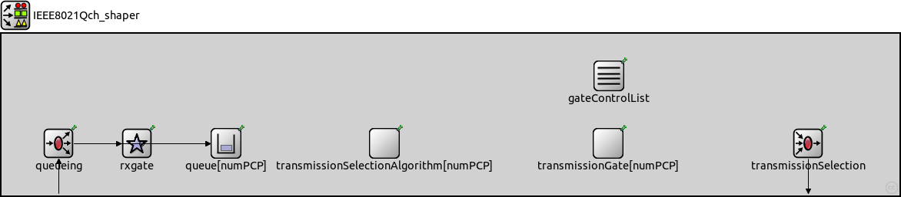
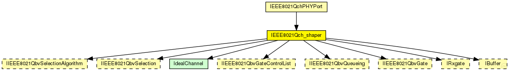
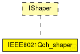

This documentation is released under the Creative Commons license
This documentation is released under the Creative Commons license(no description)
The following diagram shows usage relationships between types. Unresolved types are missing from the diagram. Click here to see the full picture.
The following diagram shows inheritance relationships for this type. Unresolved types are missing from the diagram. Click here to see the full picture.
| Name | Type | Description |
|---|---|---|
| IEEE8021QchPHYPort | compound module |
实现了CQF的物理层+数据链路层的端口 |
| Name | Type | Default value | Description |
|---|---|---|---|
| untaggedVID | int | 0 |
Untagged VLAN. Outgoing frames with this VLAN get untagged. |
| taggedVIDs | string | "0" |
Interface allows frames with this VLAN to leave the port. |
| numPCP | int | 8 |
Number of priorities. |
| AVBHigherPriorityBandwidth | int | 0bps |
Bandwidth of the TDMA traffic with higher priority than the CBS on this port (for compability with SRProtocol module) 在此端口(为了与SRProtocol模块兼容)上具有比CBS更高优先级的TDMA业务的带宽 |
| Name | Value | Description |
|---|---|---|
| display | i=block/classifier |
| Name | Direction | Size | Description |
|---|---|---|---|
| in | input |
Input of the IEEE 802.1Qbv shaper. |
|
| inD | input |
Input of the IEEE 802.1Qbv shaper for the direct in of the Port. |
|
| out | output |
Output of the IEEE 802.1Qbv shaper. |
| Name | Type | Default value | Description |
|---|---|---|---|
| queue.destination_gates | string |
Comma seperated list of gates where the frames of the buffer are delivered |
|
| rxgate.oscillator | string |
Oscillator of the timed module (must be set to the name of an oscillator module in the Node) |
|
| rxgate.timer | string |
Timer of the timed module (must be set to the name of an timer module in the Node) |
|
| rxgate.period | string |
Period of the scheduled module (must be set to the name of a period module in the Node) |
|
| rxgate.state | string |
定义门控状态，原来是string类型 int state; |
|
| transmissionSelectionAlgorithm.state | string |
State of the gate. 'o' (OPEN) or 'C' (CLOSED). |
|
| transmissionGate.state | string |
State of the gate. 'o' (OPEN) or 'C' (CLOSED). |
|
| gateControlList.oscillator | string |
Oscillator of the timed module (must be set to the name of an oscillator module in the Node) |
|
| gateControlList.timer | string |
Timer of the timed module (must be set to the name of an timer module in the Node) |
|
| gateControlList.period | string |
Period of the scheduled module (must be set to the name of a period module in the Node) |
module IEEE8021Qch_shaper like IShaper { parameters: @display("i=block/classifier"); //Untagged VLAN. Outgoing frames with this VLAN get untagged. int untaggedVID = default(0); //Interface allows frames with this VLAN to leave the port. string taggedVIDs = default("0"); // Number of priorities. int numPCP = default(8); // Bandwidth of the TDMA traffic with higher priority than the CBS on this port (for compability with SRProtocol module) // 在此端口(为了与SRProtocol模块兼容)上具有比CBS更高优先级的TDMA业务的带宽 int AVBHigherPriorityBandwidth @unit(bps) = default(0bps); gates: // Input of the IEEE 802.1Qbv shaper. input in @labels(EtherFrame); // Input of the IEEE 802.1Qbv shaper for the direct in of the Port. input inD @labels(EtherFrame); // Output of the IEEE 802.1Qbv shaper. output out @labels(EtherFrame); submodules: queueing: <default("IEEE8021QbvQueueing")> like IIEEE8021QbvQueueing { parameters: @display("p=74,143"); untaggedVID = untaggedVID; taggedVIDs = taggedVIDs; numPCP = numPCP; } queue[numPCP]: <default("IEEE8021QbvQueue")> like IBuffer { @display("p=292,143,c,130"); } // 使用CQF队列，本质上就是一个IBuffer缓冲区 // cqf[2]: <default("IEEE8021QbvQueue")> like IBuffer { // @display("p=292,143,c,130"); // } rxgate: <default("Rxgate")> like IRxgate { @display("p=176,143"); } transmissionSelectionAlgorithm[numPCP]: <default("IEEE8021QbvSelectionAlgorithm")> like IIEEE8021QbvSelectionAlgorithm { @display("p=498,143,c,130"); } transmissionGate[numPCP]: <default("IEEE8021QbvGate")> like IIEEE8021QbvGate { @display("p=789,143,c,130"); } transmissionSelection: <default("IEEE8021QbvSelection")> like IIEEE8021QbvSelection { parameters: @display("p=1049,143"); numPCP = numPCP; } gateControlList: <default("IEEE8021QbvGateControlList")> like IIEEE8021QbvGateControlList { parameters: @display("p=790,55"); numGates = numPCP; } connections: in --> queueing.in[0];//使用整形器的帧从in门进入队列 inD --> queueing.in[1];//不使用整形器的帧从inD门进入队列 for i=2..numPCP-1 { queueing.out[i] --> queue[i].in; } queueing.out[0] --> rxgate.rxin[0]; queueing.out[1] --> rxgate.rxin[1]; // rxgate.rxout[1] --> cqf[1].in; // rxgate.rxout[0] --> cqf[0].in; rxgate.rxout[0] --> queue[0].in; rxgate.rxout[1] --> queue[1].in; transmissionSelection.out --> out; }
This documentation is released under the Creative Commons license